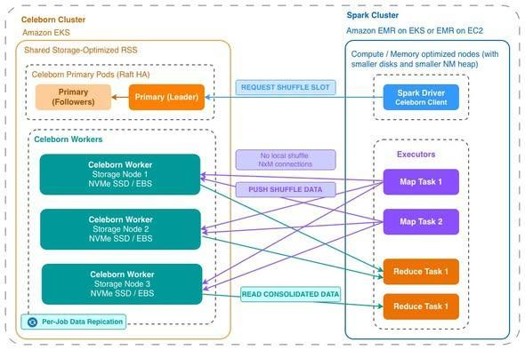
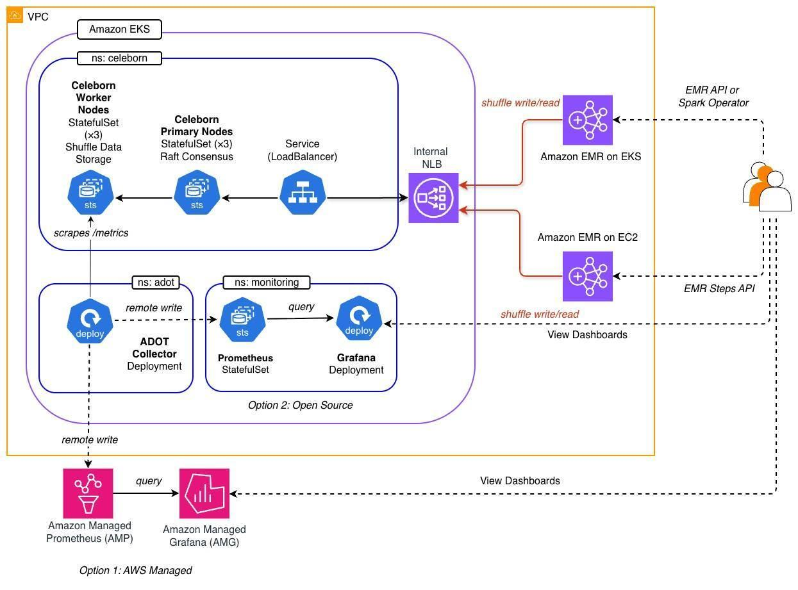
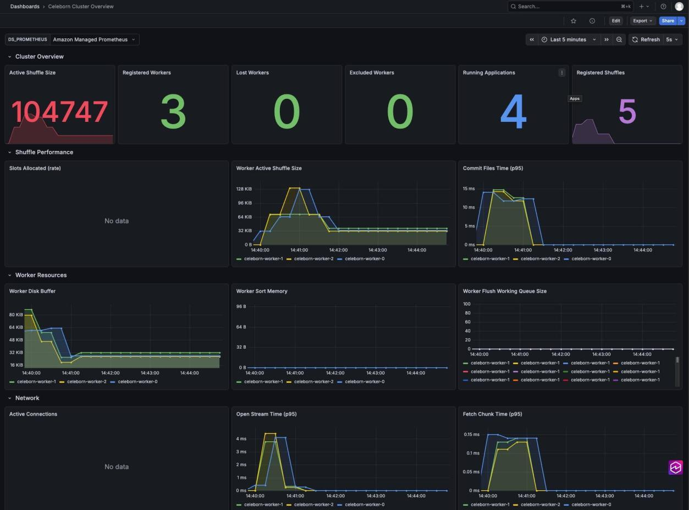

Giải mã Apache Celeborn trên Amazon EMR – "Chìa khóa" tối ưu hóa chi phí và hiệu năng Big Data cho Intern DevOps
Xin chào mọi người,
Là sinh viên thực tập tại AWS và có cơ hội được nghiên cứu về Big Data & Cloud. Đề tài nghiên cứu chính của mình ngày hôm nay là tối ưu hóa chi phí và tăng độ tin cậy cho các hệ thống xử lý dữ liệu lớn (Big Data) chạy Apache Spark trên AWS.
Nếu ai đã từng “bơi” trong các dự án Spark quy mô lớn đều biết một nỗi đau kinh điển: Xáo trộn dữ liệu (Shuffle). Đây là giai đoạn các máy chủ trung gian phải trao đổi một lượng dữ liệu khổng lồ qua mạng, cực kỳ tốn tài nguyên ổ đĩa và băng thông.
Vào ngày 15/07/2026 vừa qua, các chuyên gia AWS đã đăng tải một bài viết kỹ thuật cực kỳ sâu sắc: “High-performance remote shuffle service on Amazon EMR with Apache Celeborn”. Bài viết này đã mở ra cho mình một tư duy hoàn toàn mới về cách kiến trúc hệ thống dữ liệu, giải quyết triệt để sự đánh đổi giữa chi phí thấp (dùng EC2 Spot) và độ tin cậy của ứng dụng Spark.
“Ba Cơn Đau Đầu” của cơ chế Shuffle truyền thống
Trong quá trình thực nghiệm tại phòng Lab với các cụm Amazon EMR (cả trên EC2 truyền thống lẫn trên EKS/Kubernetes), mình đã liên tục vấp phải 3 rào cản lớn:
- Spot Instance bị thu hồi đột ngột (Spot Interruption): Sử dụng EC2 Spot giúp tiết kiệm tới 90% chi phí. Thế nhưng, khi AWS thu hồi máy chủ (chỉ báo trước 2 phút), toàn bộ dữ liệu Shuffle lưu cục bộ trên máy đó sẽ biến mất. Spark buộc phải tính toán lại từ đầu các giai đoạn trước đó (Cascade Recomputation), làm kéo dài thời gian chạy và triệt tiêu luôn phần chi phí tiết kiệm được.
- Lãng phí tài nguyên lưu trữ (Over-provisioning): Cơ chế xáo trộn truyền thống (External Shuffle Service - ESS) bắt buộc mọi nút tính toán (Worker Node) phải gánh thêm dung lượng ổ đĩa lớn để phòng hờ lưu dữ liệu Shuffle. Thực tế, chỉ có vài nút hoạt động hết công suất, các nút còn lại thì ngồi “chơi xơi nước” nhưng doanh nghiệp vẫn phải trả tiền đĩa cứng.
- Hệ thống “kẹt” không thể giảm quy mô (Under-utilized scale-in): Để tránh mất dữ liệu Shuffle, Spark ngăn các nút rảnh việc giảm quy mô (Scale-in). Hệ quả là cụm máy chủ cứ phình to lãng phí rất lâu sau khi tác vụ chính đã hoàn thành.
Giải pháp cứu cánh: Apache Celeborn là gì?
Apache Celeborn là một Dịch vụ xáo trộn từ xa (Remote Shuffle Service - RSS) mã nguồn mở. Nó giải quyết triệt để các vấn đề trên bằng cách tách rời hoàn toàn vòng đời của dữ liệu Shuffle ra khỏi các nút tính toán Spark (Executors).
Celeborn hoạt động theo kiến trúc Leader - Worker - Client:
- Thay vì ghi dữ liệu Shuffle vào ổ đĩa cục bộ, các Spark Executor sẽ đẩy (push-based) trực tiếp dữ liệu đến một cụm máy chủ Celeborn chuyên dụng, được tối ưu hóa riêng cho bộ nhớ và băng thông.
- 100% chạy được trên Spot: Do dữ liệu Shuffle đã được cất giữ an toàn trên cụm Celeborn độc lập, các Spark Executor trên EMR có thể chạy hoàn toàn bằng EC2 Spot. Nếu một Executor bị thu hồi, Spark chỉ cần bật một máy khác lên chạy tiếp mà không cần tính toán lại từ đầu.
- Mô hình Push-based thông minh: Giảm thiểu số lượng kết nối mạng $N \times M$ phức tạp trong giai đoạn đọc dữ liệu, giúp tăng đáng kể hiệu năng và độ ổn định của hệ thống ở quy mô lớn.

Phân tích Kiến trúc Giải pháp (Solution Architecture)
Trong bài viết, các tác giả đã thiết kế một mô hình cực kỳ thực tế mà mình đã áp dụng thành công cho phòng Lab của trường:
- Tách biệt hoàn toàn (Segregated Cluster): Cụm Celeborn chạy trên một cụm Amazon EKS chuyên dụng riêng, tách biệt hoàn toàn với môi trường chạy Spark (có thể là EMR trên EKS hoặc EMR trên EC2). Điều này cho phép mỗi bên tối ưu hóa cấu hình phần cứng riêng: Celeborn chọn các dòng máy tối ưu I/O và Memory, còn Spark chọn dòng máy tối ưu CPU.
- Kết nối qua Internal NLB: Các cụm EMR kết nối đến cụm Celeborn thông qua một Cân bằng tải mạng nội bộ (Network Load Balancer - NLB) trong cùng một VPC bảo mật.
- Khả năng chịu lỗi cao (Resiliency): Các nút chính (Leader) của Celeborn chạy dưới dạng StatefulSets sử dụng EBS gp3 để duy trì trạng thái đồng thuận Raft. Ở phía Worker, dữ liệu Shuffle được lưu trên ổ cứng NVMe cục bộ để đạt tốc độ cực hạn, đồng thời được cấu hình sao chép (replicate) sang 2 Worker khác nhau để phòng hờ sự cố mất nút vật lý.

Cấu hình Spark Client quan trọng nhất
Để cấu hình ứng dụng Spark của bạn chuyển sang sử dụng Celeborn làm Trình quản lý xáo trộn dữ liệu, đây là các tham số “xương sống” cần thiết lập:
# Tắt dịch vụ xáo trộn mặc định của Spark
spark.shuffle.service.enabled=false
# Khai báo trình quản lý của Celeborn
spark.shuffle.manager=org.apache.spark.shuffle.celeborn.SparkShuffleManager
spark.shuffle.sort.io.plugin.class=org.apache.spark.shuffle.celeborn.CelebornShuffleDataIO
# Trỏ tới địa chỉ Internal NLB của cụm Celeborn
spark.celeborn.master.endpoints=<NLB_DNS_NAME>:9097
# Bật tính năng sao chép dữ liệu để chống mất mát dữ liệu trên Worker
spark.celeborn.client.push.replicate.enabled=true
# Tắt chế độ đọc xáo trộn cục bộ (Bắt buộc)
spark.sql.adaptive.localShuffleReader.enabled=false
Trải nghiệm thực tế và Đánh giá từ một Intern
Sau khi làm theo hướng dẫn của bài viết và triển khai thành công hệ thống này bằng các mã nguồn mẫu (CloudFormation và Helm Chart) từ kho lưu trữ GitHub của AWS, mình đã rút ra được những bài học cực kỳ quý giá:
- Hạ tầng khả quan sát (Observability) cực chuẩn: Bài viết hướng dẫn tích hợp bộ thu ADOT (AWS Distro for OpenTelemetry) để cào các chỉ số Prometheus từ Celeborn rồi đẩy về Amazon Managed Grafana. Mình có thể theo dõi trực quan lượng dữ liệu Shuffle đang hoạt động, tình trạng GC (Garbage Collection) của JVM ngay trên Dashboard.
- Độ trễ giảm rõ rệt: Nhờ cơ chế chuyển đổi từ Pull-based truyền thống sang Push-based của Celeborn, các tác vụ phân tích lớn của mình giảm được hiện tượng thắt nút cổ chai về I/O mạng, giúp thời gian hoàn thành công việc (Job Duration) ổn định hơn hẳn.
- Tối ưu hóa chi phí thực tế: Mình đã thử nghiệm tắt/bật đột ngột các Spot Instance chạy Spark Executor giữa chừng. Kết quả đúng như bài viết mô tả: Task vẫn tiếp tục chạy mượt mà trên các node mới mà không hề phải tính toán lại giai đoạn trước, do dữ liệu Shuffle đã được bảo vệ an toàn bên cụm Celeborn.

Kết luận
Đối với những ai đang vận hành hệ thống dữ liệu lớn trên AWS, việc chuyển dịch sang kiến trúc Remote Shuffle Service như Apache Celeborn chính là giải pháp tối ưu nhất để chấm dứt sự đánh đổi đau đớn giữa chi phí và độ tin cậy.
Từ một sinh viên thực tập, việc tự tay xây dựng và cấu hình thành công hệ thống này không chỉ giúp mình đạt điểm tối đa cho đồ án nghiên cứu, mà còn giúp mình định hình tư duy thiết kế hệ thống Cloud chuẩn chỉnh, sẵn sàng cho môi trường doanh nghiệp thực tế.
Cảm ơn mọi người đã theo dõi bài viết! Có anh chị nào trong group mình đã ứng dụng Remote Shuffle Service (Celeborn, Uniffle…) cho các hệ thống Spark chạy thực tế chưa? Hãy cùng chia sẻ kinh nghiệm vận hành bên dưới nhé!
Link bài viết gốc và mã nguồn mình để ở đây nhé: AWS Blog - High Performance Remote Shuffle Service on Amazon EMR with Apache Celeborn